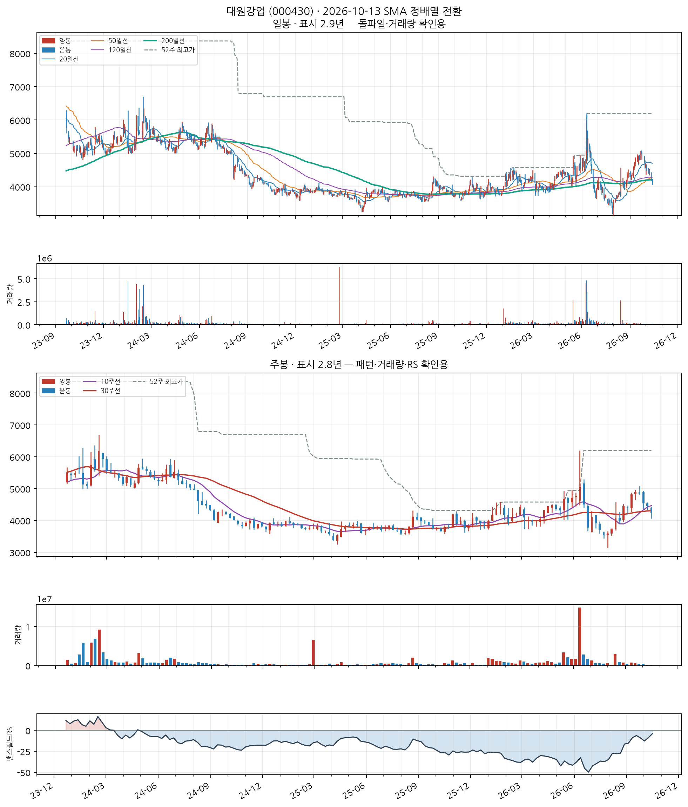
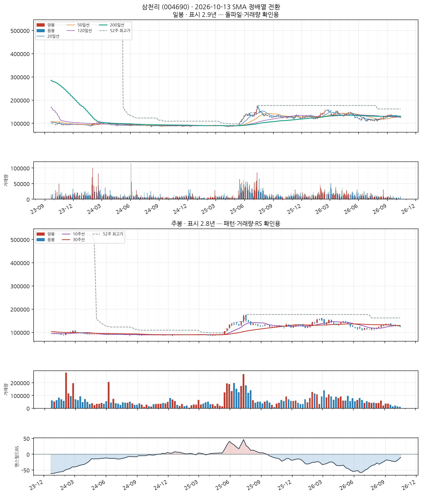
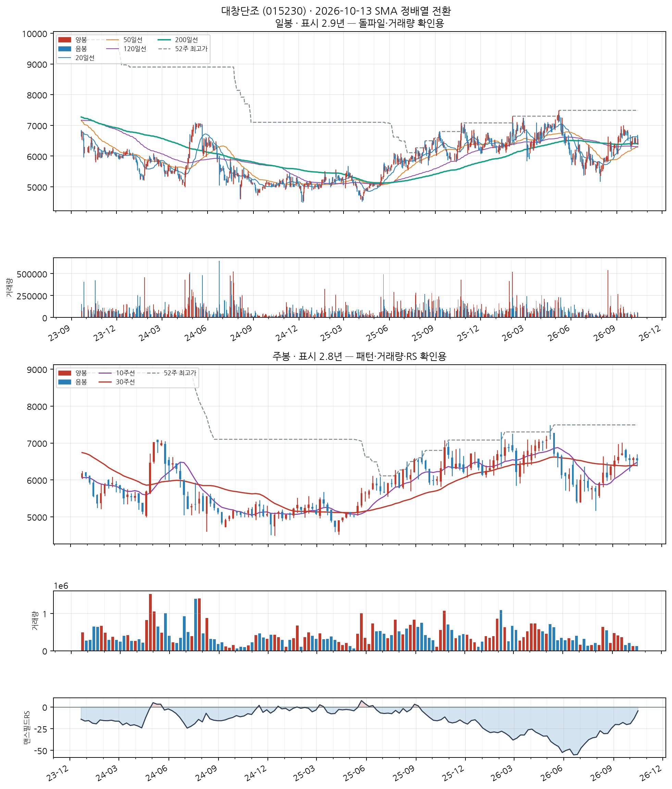
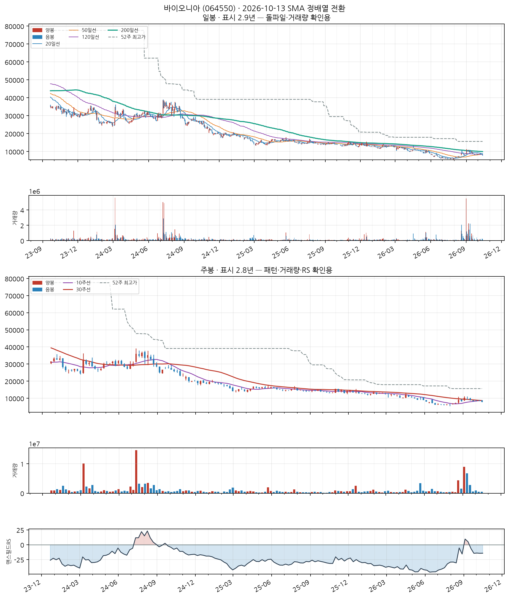
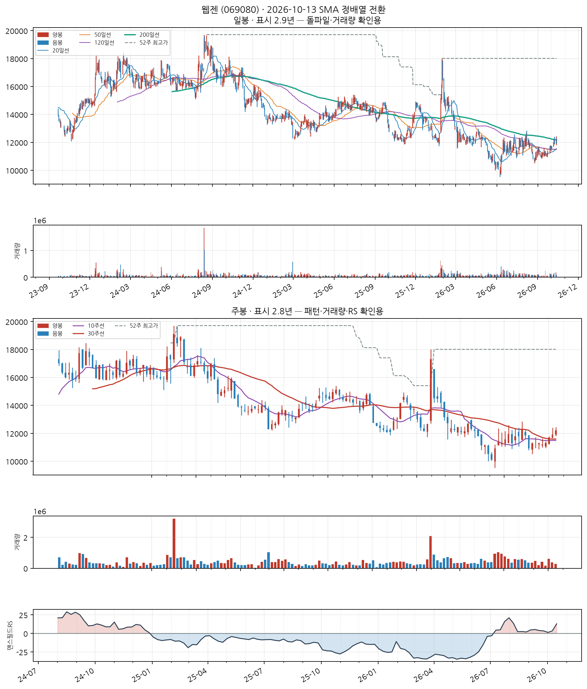
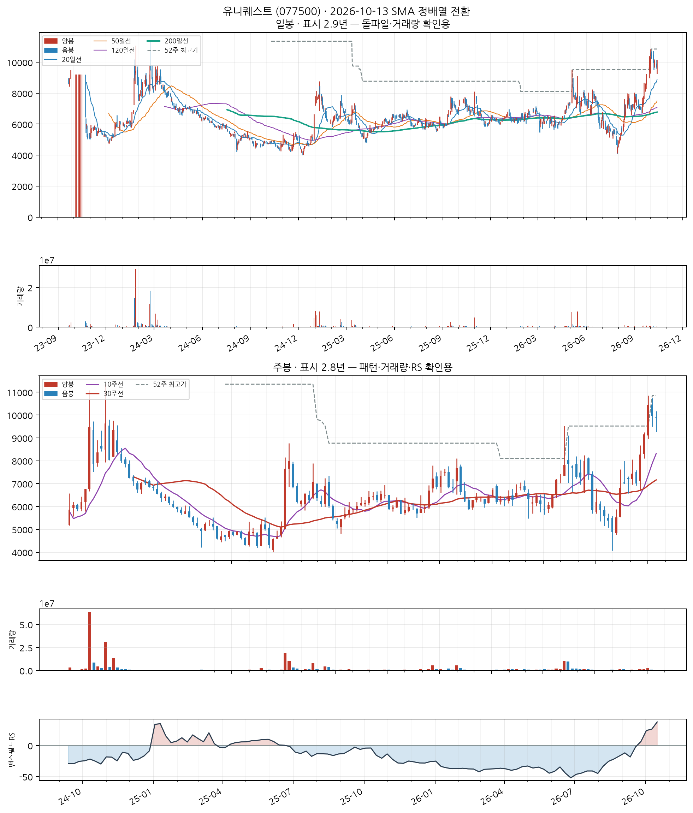

이 전략의 진입 조건
- SMA 정배열 성립 — 20일선 > 50일선 > 120일선 순서가 오늘 성립할 것
- 정배열이 최근에 시작 — 그 정배열이 시작된 지 10거래일 이내일 것 (이미 오래 정배열이던 종목은 제외 — '막 시작한 것'만 잡습니다)
자세히 — 한계와 주의사항
이 두 조건이 게이트 전부입니다. 나머지(거래량·모멘텀)는 순위를 매기는 점수일 뿐 통과 여부를 가르지 않습니다.
점수 = 신선도 + 거래량배수 + 모멘텀
· 신선도: 정배열이 시작된 지 얼마나 됐는지 (오늘 막 시작 = 1.0)
· 거래량배수: 오늘 거래량 ÷ 최근 평균 거래량 (최대 3배)
· 모멘텀: 정배열 시작일 종가 대비 오늘 종가 상승률 ÷ 10 (하락 중이면 0)
52주 신고가 스캐너와 목적이 반대입니다 — 그쪽은 이미 오래 오른 리더주를 계속 잡고, 이쪽은 이제 막 추세가 만들어진 종목만 잡습니다.
백테스트 파라미터(손절 −8%, 익절 +24% 등)는 52주 신고가 스캐너에서 그대로 가져온 값이고 Launch Pad 자체 데이터로 재튜닝한 적이 없습니다.
자동차 신품 부품 제조업
업종 참고: RS 평균 47/99(업종 중 상위 63%) · 오늘 신호 2건 · 업종 평균이 코스피 대비 -20.4%p(126일), 종목별 편차 ±14%p
🧪 자체 섹터 분류(실험적, 참고용): 넥사다이내믹스·키다리스튜디오 등 17종목 (업종 혼재)
섹터 내 RS 순위: 4/17위 (RS 73/99)
섹터 1~3위: 넥사다이내믹스(99), 키다리스튜디오(96), DN오토모티브(79)
※ 자체 상관관계 계산(최근 1년) — 검증 시 기준업종 11개 중 8개 정확. 주 단위로 구성종목이 일부 바뀔 수 있음(주간 일치도 실측 0.53)
종가 4,225 · 거래대금 3.7억
정배열 1일차거래량비 0.8x정배열 후 +0.0%
손절 3,887 | 목표 5,239 | 수량 2,366주

📐 차트 패턴: 약한 유사 — 컵위드핸들 형태 완성·미돌파 확신 낮음 판정 기준(PDF)
컵(14주·깊이 30.0%)+핸들 형태는 있으나 피벗 4,900를 아직 넘지 못했다.
가장 강한 반증 베이스 거래량 수축: 컵 구간 평균 = 직전 14주 평균의 1.69배
경쟁 후보·더 단순한 설명 역헤드앤숄더(형성 중·확신 낮음)
측정표 (주봉 종가 기준, 판정일 2026-10-13 이후 데이터 미사용)
조건별 판정
- 충족 선행 추세 — 선행 상승 +26.5% ≥ +20%
- 충족 기간 — 컵 14주 (기준 7~65주)
- 충족 깊이 — 컵 깊이 30.0% (기준 12%~33%)
- 충족 림 대칭 — 좌우 림 차이 3.2% ≤ 12%
- 충족 U자 모양 — 바닥 형태(3주 중앙값 평활): 직선 V 템플릿 오차 0.126 vs 포물선 U 템플릿 오차 0.067 → 치우침 +0.059 (V=−0.167·U=+0.167, 기각 ≤-0.05·충족 ≥+0.05) · 바닥 중심 위치 43%
- 미충족 베이스 거래량 수축 — 컵 구간 평균 = 직전 14주 평균의 1.69배
- 충족 핸들 — 핸들 3주·깊이 9.3% (기준 ≤15%, 컵 깊이의 절반 이하)
- 충족 핸들 거래량 수축 — 핸들 평균 = 컵 구간 평균의 0.21배
- 충족 최근성 — 마지막 구조 피벗(2026-10-08)이 0주 전
- 미충족 피벗 돌파 — 종가가 아직 확인선 위로 안 올라옴(-9.3%)
- 판정불가 돌파 거래량 — 돌파 전
추가로 필요한 데이터 장중 고저 기준 깊이(여기 수치는 주봉 종가 기준) · 이번 주 완결 주봉(2026-10-16 라벨) — 미완결이라 판정에서 제외
패턴만으로 매수 추천이나 목표 달성 확률을 만들지 않습니다. 수치 기준은 잠정치이며 라벨 데이터로 검증되지 않았습니다.
CC — 분기 실적 성장 우수
2026 반기보고서(누적) · 순이익 흑자전환(+nan억원→+309억원) · EPS 흑자전환(+nan원→+399원) · 매출 흑자전환(+nan억원→+4,720억원)
DART 공시 기준 · 분기 단독 전년동기 대비 · 직전 분기보다 성장률이 높아짐(가속)
AA — 연간 실적 성장 보통
2025 사업보고서(연간) · 순이익 +24.5% · EPS +27.1% · 매출 +16.9%
DART 공시 기준 · 연간 전년동기 대비 · 최근 3년 연속 증가는 아님 — 오닐 A 기준 미충족으로 한 단계 낮춤
NN — 신고가·모멘텀 데이터 없음
신고가 데이터 없음
SS — 수급(거래량) 미흡
20일 평균 대비 0.81배
유통주식수·순매수 데이터는 미보유 (거래량으로만 근사)
LL — 주도주(상대강도) 양호
RS 등급 73/99 (126거래일 ≈ 6개월 기준 · 유니버스 1000종목 중 백분위) · 지수대비 -2.4%p
상위 시가총액 유니버스 기준 — KRX 전체 대비 백분위 아님 · 오닐의 RS Rating은 52주 기준이지만 여기는 126거래일로, 같은 리포트의 6개월 모멘텀과 기간을 맞춘 값이다(원전과 다름)
II — 기관·외국인 수급 우수
20일 순매수 +3.39% (거래대금 대비) · 최근절반 +6.30% vs 이전절반 +1.88% (개선) · 순매수 10일 · 누적 +3.4억원
**오닐의 I(기관 보유 종목 수의 증가)가 아니라 단기 순매수 흐름**을 쓴 대용값이다 — 보유 기관 수는 국내에 공개 데이터가 없다 · 한국투자증권 공식 API(KIS) 기준 · 기관+외국인 합산, 기타법인 제외로 거래대금은 소폭 과소추정 · 임계값은 아직 실측 검증 전 잠정치 — 수급 이력이 쌓이면 다른 지표와 같은 방식으로 구분력을 측정해 조정 예정
MM — 시장방향 미흡
KOSPI 지수가 60일선 아래
**오닐의 M(분산일·추종일 계수)이 아니라 지수의 이동평균 상회 여부**를 쓴 대용값이다 · 실제 매매 필터로는 미적용(표시 전용) — 종목 선별보다 지수 자체 타이밍이 더 효율적이라는 자체 검증 결과 있음 (reports/vs_kospi.md)
삼천리 (004690)
11일전 포착
KOSPI
연료용 가스 제조 및 배관공급업
업종 참고: RS 평균 50/99(업종 중 상위 52%) · 오늘 신호 1건 · 업종 평균이 코스피 대비 -19.2%p(126일), 종목별 편차 ±18%p
🧪 자체 섹터 분류(실험적, 참고용): 삼영무역·한국가스공사 등 8종목 (업종 혼재)
섹터 내 RS 순위: 5/8위 (RS 68/99)
섹터 1~3위: 삼영무역(86), 한국가스공사(76), LX홀딩스(72)
※ 자체 상관관계 계산(최근 1년) — 검증 시 기준업종 11개 중 8개 정확. 주 단위로 구성종목이 일부 바뀔 수 있음(주간 일치도 실측 0.53)
종가 124,500 · 거래대금 12억
정배열 6일차거래량비 1.7x정배열 후 -2.2%
손절 114,540 | 목표 154,380 | 수량 80주

📐 차트 패턴 판정: 후보 없음 후보 없음 판정 기준(PDF)
세 패턴 모두 필수 조건을 채운 후보가 없다(가장 가까운 컵위드핸들 후보: 구조 독립성: 부모 컵(오른쪽 림 2026-04-30)의 핸들 하락(저점 2026-06-26)을 새 컵의 왼쪽 절반으로 재분할한 후보 — 자체 핸들이 아직 없다, 독립된 새 구조의 증거가 없다).
가장 강한 반증 컵위드핸들: 구조 독립성: 부모 컵(오른쪽 림 2026-04-30)의 핸들 하락(저점 2026-06-26)을 새 컵의 왼쪽 절반으로 재분할한 후보 — 자체 핸들이 아직 없다, 독립된 새 구조의 증거가 없다; 이중바닥: 두 저점 일치: 저점 차이 17.4% — 같은 지지대로 보기 어려움(10% 초과)
경쟁 후보·더 단순한 설명 더 단순한 설명: 최근 26주 하락 추세 지속(-4.1%) — 베이스 없음
추가로 필요한 데이터 장중 고저 기준 깊이(여기 수치는 주봉 종가 기준) · 이번 주 완결 주봉(2026-10-16 라벨) — 미완결이라 판정에서 제외
패턴만으로 매수 추천이나 목표 달성 확률을 만들지 않습니다. 수치 기준은 잠정치이며 라벨 데이터로 검증되지 않았습니다.
CC — 분기 실적 성장 우수
2026 반기보고서(누적) · 순이익 흑자전환(+nan억원→+322억원) · 매출 흑자전환(+nan억원→+11,573억원)
DART 공시 기준 · 분기 단독 전년동기 대비 · 직전 분기보다 성장률이 높아짐(가속) · EPS 데이터가 없어 순이익·매출로만 판정 — 자사주 매입 착시를 거르지 못함
AA — 연간 실적 성장 보통
2025 사업보고서(연간) · 순이익 +7.9% · 매출 +3.0%
DART 공시 기준 · 연간 전년동기 대비 · 최근 3년 연속 증가는 아님 — 오닐 A 기준 미충족으로 한 단계 낮춤 · EPS 데이터가 없어 순이익·매출로만 판정 — 자사주 매입 착시를 거르지 못함
NN — 신고가·모멘텀 데이터 없음
신고가 데이터 없음
SS — 수급(거래량) 우수
20일 평균 대비 1.74배
유통주식수·순매수 데이터는 미보유 (거래량으로만 근사)
LL — 주도주(상대강도) 보통
RS 등급 68/99 (126거래일 ≈ 6개월 기준 · 유니버스 1000종목 중 백분위) · 지수대비 -7.3%p
상위 시가총액 유니버스 기준 — KRX 전체 대비 백분위 아님 · 오닐의 RS Rating은 52주 기준이지만 여기는 126거래일로, 같은 리포트의 6개월 모멘텀과 기간을 맞춘 값이다(원전과 다름)
II — 기관·외국인 수급 미흡
20일 순매수 -1.87% (거래대금 대비) · 최근절반 +0.07% vs 이전절반 -3.22% (개선) · 순매수 9일 · 누적 -2.7억원
**오닐의 I(기관 보유 종목 수의 증가)가 아니라 단기 순매수 흐름**을 쓴 대용값이다 — 보유 기관 수는 국내에 공개 데이터가 없다 · 한국투자증권 공식 API(KIS) 기준 · 기관+외국인 합산, 기타법인 제외로 거래대금은 소폭 과소추정 · 임계값은 아직 실측 검증 전 잠정치 — 수급 이력이 쌓이면 다른 지표와 같은 방식으로 구분력을 측정해 조정 예정
MM — 시장방향 미흡
KOSPI 지수가 60일선 아래
**오닐의 M(분산일·추종일 계수)이 아니라 지수의 이동평균 상회 여부**를 쓴 대용값이다 · 실제 매매 필터로는 미적용(표시 전용) — 종목 선별보다 지수 자체 타이밍이 더 효율적이라는 자체 검증 결과 있음 (reports/vs_kospi.md)
자동차 신품 부품 제조업
업종 참고: RS 평균 47/99(업종 중 상위 63%) · 오늘 신호 2건 · 업종 평균이 코스피 대비 -20.4%p(126일), 종목별 편차 ±14%p
🧪 자체 섹터 분류(실험적, 참고용): 동아지질·한일시멘트 등 19종목 (업종 혼재)
섹터 내 RS 순위: 3/19위 (RS 72/99)
섹터 1~3위: 동아지질(84), 한일시멘트(77), 대창단조(72)
※ 자체 상관관계 계산(최근 1년) — 검증 시 기준업종 11개 중 8개 정확. 주 단위로 구성종목이 일부 바뀔 수 있음(주간 일치도 실측 0.53)
종가 6,530 · 거래대금 3.7억
정배열 1일차거래량비 1.0x정배열 후 +0.0%
손절 6,008 | 목표 8,097 | 수량 1,531주

📐 차트 패턴 판정: 후보 없음 후보 없음 판정 기준(PDF)
세 패턴 모두 필수 조건을 채운 후보가 없다(가장 가까운 컵위드핸들 후보: 구조 독립성: 부모 컵(오른쪽 림 2026-05-08)의 핸들 하락(저점 2026-06-26)을 새 컵의 왼쪽 절반으로 재분할한 후보 — 자체 핸들이 아직 없다, 독립된 새 구조의 증거가 없다).
가장 강한 반증 컵위드핸들: 구조 독립성: 부모 컵(오른쪽 림 2026-05-08)의 핸들 하락(저점 2026-06-26)을 새 컵의 왼쪽 절반으로 재분할한 후보 — 자체 핸들이 아직 없다, 독립된 새 구조의 증거가 없다; 이중바닥: 두 저점 일치: 저점 차이 12.9% — 같은 지지대로 보기 어려움(10% 초과)
경쟁 후보·더 단순한 설명 더 단순한 설명: 최근 26주 하락 추세 지속(-4.9%) — 베이스 없음
추가로 필요한 데이터 장중 고저 기준 깊이(여기 수치는 주봉 종가 기준) · 이번 주 완결 주봉(2026-10-16 라벨) — 미완결이라 판정에서 제외
패턴만으로 매수 추천이나 목표 달성 확률을 만들지 않습니다. 수치 기준은 잠정치이며 라벨 데이터로 검증되지 않았습니다.
CC — 분기 실적 성장 우수
2026 반기보고서(누적) · 순이익 흑자전환(+nan억원→+125억원) · EPS 흑자전환(+nan원→+501원)
DART 공시 기준 · 분기 단독 전년동기 대비 · 직전 분기보다 성장률이 높아짐(가속)
AA — 연간 실적 성장 미흡
2025 사업보고서(연간) · 순이익 -16.6% · EPS -13.3% · 매출 +7.5%
DART 공시 기준 · 연간 전년동기 대비 · 최근 3년 연속 증가는 아님 — 오닐 A 기준 미충족으로 한 단계 낮춤
NN — 신고가·모멘텀 데이터 없음
신고가 데이터 없음
SS — 수급(거래량) 미흡
20일 평균 대비 0.99배
유통주식수·순매수 데이터는 미보유 (거래량으로만 근사)
LL — 주도주(상대강도) 양호
RS 등급 72/99 (126거래일 ≈ 6개월 기준 · 유니버스 1000종목 중 백분위) · 지수대비 -4.6%p
상위 시가총액 유니버스 기준 — KRX 전체 대비 백분위 아님 · 오닐의 RS Rating은 52주 기준이지만 여기는 126거래일로, 같은 리포트의 6개월 모멘텀과 기간을 맞춘 값이다(원전과 다름)
II — 기관·외국인 수급 우수
20일 순매수 +21.20% (거래대금 대비) · 최근절반 +21.54% vs 이전절반 +20.95% (개선) · 순매수 19일 · 누적 +14.9억원
**오닐의 I(기관 보유 종목 수의 증가)가 아니라 단기 순매수 흐름**을 쓴 대용값이다 — 보유 기관 수는 국내에 공개 데이터가 없다 · 한국투자증권 공식 API(KIS) 기준 · 기관+외국인 합산, 기타법인 제외로 거래대금은 소폭 과소추정 · 임계값은 아직 실측 검증 전 잠정치 — 수급 이력이 쌓이면 다른 지표와 같은 방식으로 구분력을 측정해 조정 예정
MM — 시장방향 미흡
KOSPI 지수가 60일선 아래
**오닐의 M(분산일·추종일 계수)이 아니라 지수의 이동평균 상회 여부**를 쓴 대용값이다 · 실제 매매 필터로는 미적용(표시 전용) — 종목 선별보다 지수 자체 타이밍이 더 효율적이라는 자체 검증 결과 있음 (reports/vs_kospi.md)
의료용품 및 기타 의약 관련제품 제조업
업종 참고: RS 평균 39/99(업종 중 상위 74%) · 오늘 신호 2건 · 업종 평균이 코스닥 대비 +0.3%p(126일), 종목별 편차 ±26%p
🧪 자체 섹터 분류(실험적, 참고용): 한컴·HK이노엔 등 14종목 (업종 혼재)
섹터 내 RS 순위: 4/14위 (RS 26/99)
섹터 1~3위: 한컴(54), HK이노엔(39), 오스코텍(26)
※ 자체 상관관계 계산(최근 1년) — 검증 시 기준업종 11개 중 8개 정확. 주 단위로 구성종목이 일부 바뀔 수 있음(주간 일치도 실측 0.53)
종가 7,850 · 거래대금 17억
정배열 1일차거래량비 0.5x정배열 후 +0.0%
손절 7,222 | 목표 9,734 | 수량 1,273주

📐 차트 패턴 판정: 후보 없음 후보 없음 판정 기준(PDF)
세 패턴 모두 필수 조건을 채운 후보가 없다(가장 가까운 이중바닥 후보: 두 저점 일치: 저점 차이 77.2% — 같은 지지대로 보기 어려움(10% 초과)).
가장 강한 반증 이중바닥: 두 저점 일치: 저점 차이 77.2% — 같은 지지대로 보기 어려움(10% 초과)
경쟁 후보·더 단순한 설명 더 단순한 설명: 최근 26주 하락 추세 지속(-19.2%) — 베이스 없음
추가로 필요한 데이터 장중 고저 기준 깊이(여기 수치는 주봉 종가 기준) · 이번 주 완결 주봉(2026-10-16 라벨) — 미완결이라 판정에서 제외
패턴만으로 매수 추천이나 목표 달성 확률을 만들지 않습니다. 수치 기준은 잠정치이며 라벨 데이터로 검증되지 않았습니다.
CC — 분기 실적 성장 미흡
2026 반기보고서(누적) · 순이익 적자확대(+nan억원→-11억원) · EPS 적자확대(+nan원→-75원)
DART 공시 기준 · 분기 단독 전년동기 대비 · 직전 분기보다 성장률이 낮아짐(감속) — 오닐 C 기준으로 한 단계 낮춤
AA — 연간 실적 성장 미흡
2025 사업보고서(연간) · 순이익 흑자전환(-190억원→+17억원) · EPS 적자축소(-798원→-109원) · 매출 +12.3%
DART 공시 기준 · 연간 전년동기 대비 · 적자폭은 줄었으나 여전히 적자 — 오닐의 이익성장 기준은 미충족 · 최근 3년 연속 증가는 아님 — 오닐 A 기준 미충족으로 한 단계 낮춤 · 순이익은 연결 총계(비지배지분 포함), EPS는 지배주주 기준이라 둘의 증감 방향이 다를 수 있음
NN — 신고가·모멘텀 데이터 없음
신고가 데이터 없음
SS — 수급(거래량) 미흡
20일 평균 대비 0.54배
유통주식수·순매수 데이터는 미보유 (거래량으로만 근사)
LL — 주도주(상대강도) 미흡
RS 등급 26/99 (126거래일 ≈ 6개월 기준 · 유니버스 1000종목 중 백분위) · 지수대비 -7.6%p
상위 시가총액 유니버스 기준 — KRX 전체 대비 백분위 아님 · 오닐의 RS Rating은 52주 기준이지만 여기는 126거래일로, 같은 리포트의 6개월 모멘텀과 기간을 맞춘 값이다(원전과 다름)
II — 기관·외국인 수급 미흡
20일 순매수 -3.19% (거래대금 대비) · 최근절반 +0.65% vs 이전절반 -4.31% (개선) · 순매수 9일 · 누적 -23.3억원
**오닐의 I(기관 보유 종목 수의 증가)가 아니라 단기 순매수 흐름**을 쓴 대용값이다 — 보유 기관 수는 국내에 공개 데이터가 없다 · 한국투자증권 공식 API(KIS) 기준 · 기관+외국인 합산, 기타법인 제외로 거래대금은 소폭 과소추정 · 임계값은 아직 실측 검증 전 잠정치 — 수급 이력이 쌓이면 다른 지표와 같은 방식으로 구분력을 측정해 조정 예정
MM — 시장방향 미흡
KOSDAQ 지수가 20일선 아래
**오닐의 M(분산일·추종일 계수)이 아니라 지수의 이동평균 상회 여부**를 쓴 대용값이다 · 실제 매매 필터로는 미적용(표시 전용) — 종목 선별보다 지수 자체 타이밍이 더 효율적이라는 자체 검증 결과 있음 (reports/vs_kospi.md)
소프트웨어 개발 및 공급업
업종 참고: RS 평균 48/99(업종 중 상위 60%) · 오늘 신호 3건 · 업종 평균이 코스닥 대비 +11.3%p(126일), 종목별 편차 ±29%p
🧪 자체 섹터 분류(실험적, 참고용): 소프트웨어 개발 및 공급업 (컴투스·웹젠 등 13종목)
섹터 내 RS 순위: 2/13위 (RS 74/99)
섹터 1~3위: 컴투스(81), 웹젠(74), 시프트업(67)
※ 자체 상관관계 계산(최근 1년) — 검증 시 기준업종 11개 중 8개 정확. 주 단위로 구성종목이 일부 바뀔 수 있음(주간 일치도 실측 0.53)
종가 12,200 · 거래대금 11억
정배열 1일차거래량비 0.9x정배열 후 +0.0%
손절 11,224 | 목표 15,128 | 수량 819주

📐 차트 패턴 판정: 후보 없음 후보 없음 판정 기준(PDF)
세 패턴 모두 필수 조건을 채운 후보가 없다(가장 가까운 컵위드핸들 후보: 림 대칭: 좌우 림 차이 29.2% — 오른쪽 림이 낮음, 20% 초과).
가장 강한 반증 컵위드핸들: 림 대칭: 좌우 림 차이 29.2% — 오른쪽 림이 낮음, 20% 초과; 이중바닥: 두 저점 일치: 저점 차이 16.9% — 같은 지지대로 보기 어려움(10% 초과)
경쟁 후보·더 단순한 설명 더 단순한 설명: 최근 26주 하락 추세 지속(-1.9%) — 베이스 없음
추가로 필요한 데이터 장중 고저 기준 깊이(여기 수치는 주봉 종가 기준) · 이번 주 완결 주봉(2026-10-16 라벨) — 미완결이라 판정에서 제외
패턴만으로 매수 추천이나 목표 달성 확률을 만들지 않습니다. 수치 기준은 잠정치이며 라벨 데이터로 검증되지 않았습니다.
CC — 분기 실적 성장 미흡
2026 반기보고서(누적) · 순이익 적자확대(+nan억원→-0.2억원) · EPS 흑자전환(+nan원→+218원) · 매출 흑자전환(+nan억원→+380억원)
DART 공시 기준 · 분기 단독 전년동기 대비 · 직전 분기보다 성장률이 낮아짐(감속) — 오닐 C 기준으로 한 단계 낮춤 · 순이익은 연결 총계(비지배지분 포함), EPS는 지배주주 기준이라 둘의 증감 방향이 다를 수 있음
AA — 연간 실적 성장 미흡
2025 사업보고서(연간) · 순이익 -58.5% · EPS -57.3% · 매출 -49.6%
DART 공시 기준 · 연간 전년동기 대비 · 최근 3년 연속 증가는 아님 — 오닐 A 기준 미충족으로 한 단계 낮춤
NN — 신고가·모멘텀 데이터 없음
신고가 데이터 없음
SS — 수급(거래량) 미흡
20일 평균 대비 0.95배
유통주식수·순매수 데이터는 미보유 (거래량으로만 근사)
LL — 주도주(상대강도) 양호
RS 등급 74/99 (126거래일 ≈ 6개월 기준 · 유니버스 1000종목 중 백분위) · 지수대비 +24.7%p
상위 시가총액 유니버스 기준 — KRX 전체 대비 백분위 아님 · 오닐의 RS Rating은 52주 기준이지만 여기는 126거래일로, 같은 리포트의 6개월 모멘텀과 기간을 맞춘 값이다(원전과 다름)
II — 기관·외국인 수급 미흡
20일 순매수 -8.25% (거래대금 대비) · 최근절반 -12.08% vs 이전절반 -0.95% (약화) · 순매수 8일 · 누적 -18.7억원
**오닐의 I(기관 보유 종목 수의 증가)가 아니라 단기 순매수 흐름**을 쓴 대용값이다 — 보유 기관 수는 국내에 공개 데이터가 없다 · 한국투자증권 공식 API(KIS) 기준 · 기관+외국인 합산, 기타법인 제외로 거래대금은 소폭 과소추정 · 임계값은 아직 실측 검증 전 잠정치 — 수급 이력이 쌓이면 다른 지표와 같은 방식으로 구분력을 측정해 조정 예정
MM — 시장방향 미흡
KOSDAQ 지수가 20일선 아래
**오닐의 M(분산일·추종일 계수)이 아니라 지수의 이동평균 상회 여부**를 쓴 대용값이다 · 실제 매매 필터로는 미적용(표시 전용) — 종목 선별보다 지수 자체 타이밍이 더 효율적이라는 자체 검증 결과 있음 (reports/vs_kospi.md)
유니퀘스트 (077500)
12일전 포착
KOSPI
기계장비 및 관련 물품 도매업
업종 참고: RS 평균 61/99(업종 중 상위 18%) · 오늘 신호 1건 · 업종 평균이 코스닥 대비 +24.8%p(126일), 종목별 편차 ±36%p
🧪 자체 섹터 분류(실험적, 참고용): 반도체 제조업 (뉴파워프라즈마·제주반도체 등 21종목)
섹터 내 RS 순위: 6/21위 (RS 95/99)
섹터 1~3위: 뉴파워프라즈마(98), 제주반도체(97), 저스템(97)
※ 자체 상관관계 계산(최근 1년) — 검증 시 기준업종 11개 중 8개 정확. 주 단위로 구성종목이 일부 바뀔 수 있음(주간 일치도 실측 0.53)
종가 9,880 · 거래대금 35억
정배열 7일차거래량비 1.0x정배열 후 -7.0%
손절 9,090 | 목표 12,251 | 수량 1,012주

📐 차트 패턴 판정: 후보 없음 후보 없음 판정 기준(PDF)
세 패턴 모두 필수 조건을 채운 후보가 없다(가장 가까운 컵위드핸들 후보: 핸들: 핸들 저점 4,880가 컵 중간값 6,930 아래 — 핸들이 아니라 컵 재하락).
가장 강한 반증 컵위드핸들: 핸들: 핸들 저점 4,880가 컵 중간값 6,930 아래 — 핸들이 아니라 컵 재하락; 이중바닥: 두 저점 일치: 저점 차이 16.9% — 같은 지지대로 보기 어려움(10% 초과)
경쟁 후보·더 단순한 설명 더 단순한 설명: 최근 26주 상승 추세 지속(+63.8%) — 베이스 없음
추가로 필요한 데이터 장중 고저 기준 깊이(여기 수치는 주봉 종가 기준) · 이번 주 완결 주봉(2026-10-16 라벨) — 미완결이라 판정에서 제외
패턴만으로 매수 추천이나 목표 달성 확률을 만들지 않습니다. 수치 기준은 잠정치이며 라벨 데이터로 검증되지 않았습니다.
CC — 분기 실적 성장 우수
2026 반기보고서(누적) · 순이익 흑자전환(+nan억원→+129억원) · EPS 흑자전환(+nan원→+606원) · 매출 흑자전환(+nan억원→+2,163억원)
DART 공시 기준 · 분기 단독 전년동기 대비 · 직전 분기보다 성장률이 높아짐(가속)
AA — 연간 실적 성장 보통
2025 사업보고서(연간) · 순이익 +290.0% · EPS +318.8% · 매출 +2.8%
DART 공시 기준 · 연간 전년동기 대비 · 최근 3년 연속 증가는 아님 — 오닐 A 기준 미충족으로 한 단계 낮춤
NN — 신고가·모멘텀 데이터 없음
신고가 데이터 없음
SS — 수급(거래량) 양호
20일 평균 대비 1.01배
유통주식수·순매수 데이터는 미보유 (거래량으로만 근사)
LL — 주도주(상대강도) 우수
RS 등급 95/99 (126거래일 ≈ 6개월 기준 · 유니버스 1000종목 중 백분위) · 지수대비 +53.8%p
상위 시가총액 유니버스 기준 — KRX 전체 대비 백분위 아님 · 오닐의 RS Rating은 52주 기준이지만 여기는 126거래일로, 같은 리포트의 6개월 모멘텀과 기간을 맞춘 값이다(원전과 다름)
II — 기관·외국인 수급 양호
20일 순매수 +16.56% (거래대금 대비) · 최근절반 +11.70% vs 이전절반 +23.18% (약화) · 순매수 17일 · 누적 +111.1억원
**오닐의 I(기관 보유 종목 수의 증가)가 아니라 단기 순매수 흐름**을 쓴 대용값이다 — 보유 기관 수는 국내에 공개 데이터가 없다 · 한국투자증권 공식 API(KIS) 기준 · 기관+외국인 합산, 기타법인 제외로 거래대금은 소폭 과소추정 · 임계값은 아직 실측 검증 전 잠정치 — 수급 이력이 쌓이면 다른 지표와 같은 방식으로 구분력을 측정해 조정 예정 · 최근 유입이 이전보다 약해져 한 단계 낮춤
MM — 시장방향 미흡
KOSPI 지수가 60일선 아래
**오닐의 M(분산일·추종일 계수)이 아니라 지수의 이동평균 상회 여부**를 쓴 대용값이다 · 실제 매매 필터로는 미적용(표시 전용) — 종목 선별보다 지수 자체 타이밍이 더 효율적이라는 자체 검증 결과 있음 (reports/vs_kospi.md)